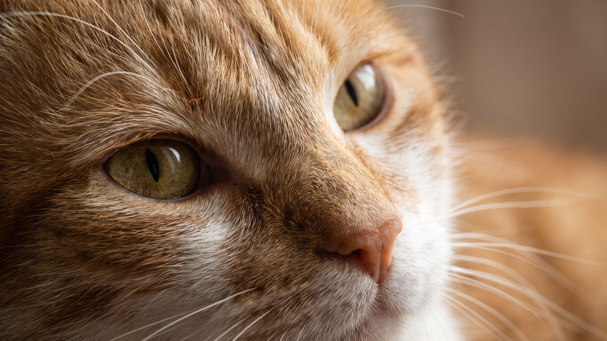

Кошка скребётся в дверь: выпускать на улицу или нет?

7 ноября 2026 · 3 мин · Поведение · Безопасность · Кошки
Кошка садится у двери, скребёт лапой, мяукает. И так по кругу. Многие хозяева в этот момент думают: может, просто выпустить? Но за этим решением стоит выбор, который влияет на безопасность питомца на годы вперёд. Разбираем, что кошка на самом деле просит, какие у выгула риски и как дать ей «уличные» ощущения без потери в безопасности.
Почему кошка просится на улицу
Домашняя кошка сохранила инстинкты охотника: территорию нужно обойти, новые запахи изучить, добычу выследить. Когда квартира маленькая, игр мало, а из «нового» только одна и та же стена, кошка ищет выход буквально.
Три главных мотива:
- Запахи с улицы через щели и вентиляцию. Кошачий нос чувствует то, что мы не замечаем: другие кошки, птицы, трава. Запах тянет туда, где он сильнее.
- Скука и недостаток охоты. Если за день не было ни одной игры-погони, инстинкт не получил выхода. Кошка ищет его сама.
- Гормоны. Некастрированные кошки в период течки рвутся наружу с удвоенной силой. После стерилизации интенсивность поведения обычно снижается.
Реальные риски свободного выгула
Это расчёт, не страшилка. Кошка на свободном выгуле в городе живёт в среднем вдвое меньше, чем домашняя: по данным нескольких ветеринарных организаций, медиана для уличной кошки 5–7 лет против 12–15 лет дома.
- Дорога. Главная причина гибели и травм у городских кошек. Кошка видит расстояние до машины, но не её скорость.
- Другие животные. Агрессивные собаки, уличные коты, которые метят и дерутся.
- Паразиты. После каждой прогулки по траве или земле кошка приносит домой риск заражения блохами, клещами, гельминтами. Всё это требует регулярной обработки.
- Пропажа. Испуганная кошка способна убежать на несколько кварталов и не найти дорогу назад. При нерегулярных прогулках маршрут она не запоминает.
Как дать «улицу» безопасно
Четыре решения, которые работают на разных условиях:
- Шлейка и поводок. Не все кошки принимают шлейку, но приучить можно. Начинать с нескольких минут в день дома, потом в подъезде, потом во двор. Главное: никакой спешки. Кошку не «выгуливают», как собаку, её выводят на разведку.
- Балкон с сеткой «антикошка». Мелкоячеистая сетка крепится на балконные рамы и удерживает кошку от падения и побега. Кошка получает воздух, звуки, запахи. Всё, что нужно от «улицы».
- Catio (уличный вольер). Огороженное пространство у окна или на даче, куда кошка выходит сама через специальный лаз. Полное решение для частного дома.
- Обогащение дома. Вертикаль (когтеточки-башни, полки), окно как «кошачье ТВ» (лежанка с видом на улицу, кормушка для птиц за стеклом), игра-охота два раза в день по 10–15 минут с удочкой или мышкой. Кошка, которая охотится дома, реже рвётся за дверь.
Скребётся в дверь: что просит и как перенаправить
Кошка у двери почти никогда не просит именно «улицы». Она просит стимуляции: новое, подвижное, пахнущее. Дверь просто ведёт туда, откуда идут запахи.
Три практических шага:
- Запустите игру-охоту сразу, как только кошка начала скрестись. Не через полчаса, а в этот момент. Удочка с перышком или мышь на верёвке, 10 минут активной погони.
- Поставьте у окна лежанку на уровне улицы. Птицы, прохожие, деревья: этого хватает, чтобы занять кошку на час.
- Не открывайте дверь в ответ на скрёб. Кошка быстро учится: скреблась, открыли. Игнорировать скрёб и предлагать альтернативу в тот же момент: единственный способ разорвать эту цепочку.
🐾 Понравился разбор?
Подпишитесь на канал — каждый день разбираем по одному тревожному симптому у кошек и собак: что в пределах нормы, а когда пора к врачу. Подпишитесь, чтобы не пропустить разбор, который может спасти здоровье вашего питомца.
Материал носит информационный характер и не заменяет очную консультацию ветеринара.
← Все статьи · Открыть AnimaLife в Telegram · RSS